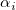
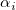
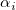
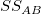
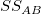

/math-74b8eddf4b37de80c7c8eed1b64e46fc.png "\mu \,\!") は反応データ全体の平均、は因子Aのレベル I での偏差、
は反応データ全体の平均、は因子Aのレベル I での偏差、/math-193f021d9028eb9706698a6f5c0f1e0a.png "\beta _j\,\!") は因子Bのレベル j での偏差、は2つの因子間の交互作用で、 は誤差項です。そして、標本の変化は、3つの部分に分けられ、3つの仮説検定を行うことができます。
は因子Bのレベル j での偏差、は2つの因子間の交互作用で、 は誤差項です。そして、標本の変化は、3つの部分に分けられ、3つの仮説検定を行うことができます。
内容 |
を因子AのレベルI と因子Bのレベル j でのk番目の観測値を表すものとすると、二元配置分散分析モデルは下記のように書くことができます。
ここで、は反応データ全体の平均、は因子Aのレベル I での偏差、 は因子Bのレベル j での偏差、は2つの因子間の交互作用で、 は誤差項です。そして、標本の変化は、3つの部分に分けられ、3つの仮説検定を行うことができます。
ですから、因子Aに関しては、帰無仮説はrの異なる母集団の平均が同じとし、対立仮説は、少なくとも1つの標本の平均が、他とは異なるということになります。
のとき、いくつかの p とq において, pは1と等しくなく、qはrと等しくありません。
ですから、因子Bに関しては、帰無仮説はsの異なる母集団の平均が同じとし、対立仮説は、少なくとも1つの標本の平均が、他とは異なるということになります。
のとき、いくつかの p とq において, pは1と等しくなく、qはsと等しくありません。
交互作用の項に対して、帰無仮説は、2つのファクター間の交互作用が無いということです。
のとき、いくつかの p とq において, pは1と等しくなく、qはrsと等しくありません。
これらの仮説を検定するため、標本全体を4つの部分に分け、標本の変化で推定します。
ここで
/math-472bd2d14aa56baec128037732f9c276.png "S_{AB}=t\sum_{i=1}^r\sum_{j=1}^s(\bar y_{ijm}-\bar y_{imm}-\bar y_{mjm}+\bar y)^2")
すると、次の値を得ることができます。
は合計二乗和、 /math-8d95f5934baa7c353f18fd77c675e92c.png "SS_A") は因子Aからの平均差の変化、
は因子Aからの平均差の変化、/math-8abe5e40ad8ae7fd4ed12d2d27a1a7dd.png "SS_B") は因子Bからの平均の変化をそれぞれ表します。そして、 は交互作用の変化を、
は因子Bからの平均の変化をそれぞれ表します。そして、 は交互作用の変化を、/math-349fb0475e9b16a6353bbc1aae235e6a.png "SS_{Error}") ははすべての個別の標本の変化を表します。そして、 F 検定はそれらの間の分散の有意差を検定するのに使います。
ははすべての個別の標本の変化を表します。そして、 F 検定はそれらの間の分散の有意差を検定するのに使います。
ある有意水準/math-7b7f9dbfea05c83784f8b85149852f08.png "\alpha") が与えられると、 F 統計量が重要な値
が与えられると、 F 統計量が重要な値/math-61ee10cfeb9c8fea41d940edebb82588.png "F_\alpha") を超える場合、またはF統計量のP値が有意水準以下の場合、帰無仮説
を超える場合、またはF統計量のP値が有意水準以下の場合、帰無仮説/math-e65765bedcabe42c66ec93228769e82a.png "H_0") は棄却されます。
は棄却されます。
二元配置分散分析の計算は以下のようにまとめることができます。
| 分散の入力 | 自由度 (DF) | 平方和 (SS) | 平均平方 (MS) | F 値 | Prob > F |
|---|---|---|---|---|---|
| 因子A | r - 1 | |
/math-d8cf712091994539169b7f92bcabdd67.png "MS_A") |
/ /math-ff8dc369a4b279c7e064cb1ef6fc4ba1.png "MS_{Error}") |
|
| Factor B | s - 1 | |
/math-666cadb9e58dc0e560e052a20e3a510f.png "MS_B") |
/ |
|
| 交互作用 | (r- 1) (s - 1) | /math-bcd1cd8741b39cdd8c3e290f145ae5a1.png "MS_{AB}") |
/ |
||
| Error | rs (t - 1) | |
|
||
| 合計 | rst - 1 |
Originの二元配置分散分析は、いくつかのNAG関数を使っています。NAG関数 nag_dummy_vars (g04eac)は、必要な形の行列を作成し、NAG関数nag_regsn_mult_linear (g02dac) は、必要な形の線形回帰を実行します。線形回帰の結果は、二元配置ANOVA表を作成するのに使われます。詳細はNAG文書をご覧ください。
少なくとも1つのファクターレベルの平均が統計的に他のファクターレベルの平均と異なることを調べる二元配置ANOVAを実行すると、それに続けて、平均が異なるかどうかすべてのファクターでの可能な組合せで、平均の比較が行われます。Originでは、平均比較にさまざまな方法があり、これはNAG関数のnag_anova_confid_interval (g04dbc)を使って行っています。
複数の平均の比較法の2種類がOriginに含まれています。
シングルステップ法これは、Tukey-Kramer, Bonferroni, Dunn-Sidak, Fisher’s LSD, Scheffé, Dunnettを含む、平均がどの程度違うのかを示すために信頼区間を作成します。
ステップワイズ法Holm-Bonferroni 、Holm-Sidak 検定を含む仮説検定を実行します。
検出力分析は、サンプルデータに対する仮説の検出力だけでなく、実際の検出力を計算します。
二元配置ANOVAの検出力は、その敏感度の計測です。検出力は、ANOVAが実際の差があるときの標本の平均の差を検出するものです。帰無仮説および対立仮説に関して、検出力は検定する統計量 F が、実際に帰無仮説を棄却すべき(例：与えられた帰無仮説が真でない)ときに、帰無仮説を棄却するのに十分であるという確率です。
Originの二元配置ANOVAダイアログは、因子A および因子B に対する検出力を計算します。「交互作用」チェックボックスが選択されている場合、OriginはA*Bの交互作用に対して、検出力を計算することが出来ます。
検出力は次式で定義されます。
/math-e3a9b7f790e5b9b01d2fe974337ea4cf.png "power=1-probf(f,df,dfe,nc)\,\!")
ここで f は、非中心の F-分布の偏りで、このF分布は自由度df および dfe と nc = SS/MSEを持ちます。SS はA, B, A*Bの二乗和で、 MSEは誤差の平均平方、 df は元のA, B, A*Bに関しての分子の自由度、 dfe は誤差の自由度です。全ての値(SS, MSE, df, dfe) は、ANOVA表で取得できます。probf( ) の値が、NAG関数nag_prob_non_central_f_dist (g01gdc)を使って取得されます。詳細はNAG文書をご覧ください。
上記は、簡単な一元配置ANOVAのアルゴリズムの概要であり、詳細な数学的な演算については、このマニュアルの対応する部分やNAG文書を参照してください。